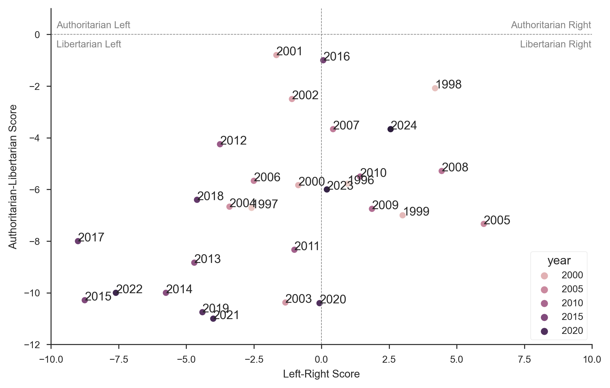
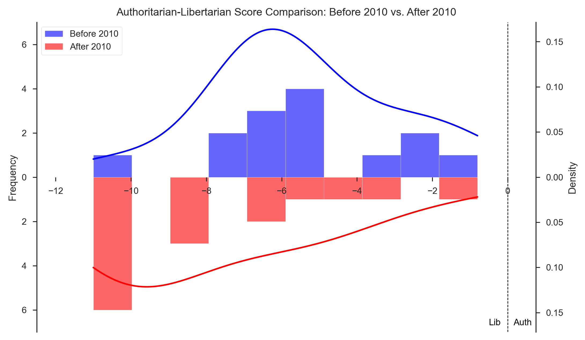

<!-- Google tag (gtag.js) -->
<script async src="https://www.googletagmanager.com/gtag/js?id=G-V5ZBBZ6FTG"></script>
<script>
window.dataLayer = window.dataLayer || [];
function gtag(){dataLayer.push(arguments);}
gtag('js', new Date());

gtag('config', 'G-V5ZBBZ6FTG');
</script>
<link href="css/splendor.css" rel="stylesheet">
<script src="https://rawcdn.githack.com/oscarmorrison/md-page/232e97938de9f4d79f4110f6cfd637e186b63317/md-page.js"></script>
<script type="text/javascript">
    window.MathJax = {
      tex: {
        inlineMath: [['\\(','\\)']],
        displayMath: [['$$','$$']],
        processEscapes: true
      },
      options: {
          enableMenu: false // Disable the MathJax context menu
      }
    };
  </script>
  <script type="text/javascript" id="MathJax-script" async
    src="https://cdn.jsdelivr.net/npm/mathjax@3/es5/tex-mml-chtml.js">
  </script>  
</script>
<noscript>

# Has <mark>left</mark> gone too far? A data-driven analysis

<b>Author:</b> Tengyu S, <b>Date:</b> July 21st 2024

<br>

<em><ins>Disclaimer</ins>: This post is intended for educational purposes only and does not reflect the political views of the author. The data and methodology presented may contain biases and might not accurately represent reality. Readers are advised to use their own judgment and discretion when interpreting the content. The author is not responsible for any misuse of the information provided.</em>

<br>

It's 2024 and the political climate is more polarized than ever in United States. The battle between Democrats and Republicans has become a "civil war" on social media, where the left are often radicalized as "communists" and the right as "nazis". A very popular tweet showed up on my timeline the other day, saying:

<blockquote>
<p>
 "The left has gone so far left that the right has become the new center".
</p>
</blockquote>

<br>

<div class="wide-image">
    
    <div class="wide-image-caption">
      Photo taken by Ximing Ran
      </div>
</div>

<br>

A google search and you can find similar quotes floating around the Internet since 2010. But is it true? Many of these claims are based on personal opinions and anecdotes that can hardly serve as evidence. Instead, can we use data, especially texts, to analyze the change in political spectrum over time? In this post, I will apply Natural Language Processing (NLP) methods on a dataset from [Urban Institute](https://www.urban.org/) to attempt to answer this question. 

The Urban Institute is a US think tank that has often been labeled as "center", "left-leaning" and "liberal" in various studies. The idea is that if we can observe a shift in political views in their reports, it may suggest a change in the geographic center of US politics. 

Obviously this measure is far from perfect. There are many other think tanks and organizations that need to be included for comparison. Think tanks also do not represent the whole political spectrum. But I think it is a good starting point to study the center of US politics. Maybe a better title for this post should be <em>"Has the center gone too far left?"</em>.

### 1. Data Collection

Urban Institute displays their reports in a very organized way on their [website](https://www.urban.org/research). I was able to write a simple scraper using Python to collect the information of all the reports. See below for a snapshot of the data:

<div class="mid-image">
  
</div>

Due to legal concerns, I am not able to share the raw data here. But here is the code I used to scrape the website:

- First grab the urls of to the detail pages

<iframe src="https://www.thiscodeworks.com/embed/669cfa56ada5ec0014664c2b" style="width: 100%; height: 310px;" frameborder="0"></iframe>

- Then find and parse the information of each report, including title, author, date, tags, link to the pdf file, etc.

<iframe src="https://www.thiscodeworks.com/embed/669d040a93a3b800146466a4" style="width: 100%; height: 1269px;" frameborder="0"></iframe>

### 2. Calculate Political Orientation

Once all the reports from Urban Institute have been collected, we move on to calculating the political orientation score using GPT-4 API. Each report will be analyzed by the model to predict responses to a set of political questions. Additionally, the model will determine whether each report is directly related to the questions. Only the predictions from the relevant reports will then be used in estimating the political orientation.

Due to token limits, only 20 reports from each year were randomly selected for analysis. Also, a simplified version of the political compass questionnaire was used, consisting of only 8 questions. This is significantly fewer than many standard tests you can find online, which have up to 100 questions. Therefore, our model can only provide a rough estimation of the real political orientation.

The political questionnaire and the corresponding political spectrum I used are as follows:

Do you agree or disagree with the following statements?

Economic Policy:

- Government should play a significant role in regulating markets to ensure consumer protection. (Left)
- High levels of taxation on the wealthy are necessary to reduce inequality. (Left)

Social Issues:

- Society must ensure all individuals have equal opportunities regardless of their background. (Left)
- Traditional values and norms are important to maintain societal cohesion. (Authoritarianism)

Foreign Policy:

- My country should prioritize international cooperation over national interests. (Libertarianism)
- Military force is a necessary tool in maintaining our global position. (Authoritarianism)

Environmental Policy:

- Strong environmental regulations are necessary to combat climate change, even at the cost of economic growth. (Left, Libertarianism)
- Private sector innovation is the best way to address environmental challenges. (Right)

Governance:

- The government should have the authority to implement strict measures to ensure public safety. (Authoritarianism)
- Individual freedoms should be prioritized over state security measures. (Libertarianism)

The model is instructed to provide a response to each statement on a scale from 1 to 5, where 1 means "strongly disagree" and 5 means "strongly agree." These responses are then used to calculate scores for economic orientation (left or right) and governance orientation (authoritarianism vs. libertarianism). In our design, a score 0 should represent the middle ground of the spectrum, while negative values indicate left/libertarianism, and positive values indicate right/authoritarianism.

### 3. Results

Let's see how each year's score of Urban Institute looks like on the political compass diagram:

<div class="mid-image">
  
</div>

First note that our result aligns with the common belief that the Urban Institute is a left-leaning and liberal think tank. The average economic left-right score is -1.44 and the average authoritarianism-liberal score is -6.58. Observing the graph we can see a slight shift towards the left and libertarianism over time, which is the bottom-left corner of the diagram. To show the trend more clearly, I divided the years into "before 2010" and "after 2010" and compared the distributions of the scores:

- Left-Right Score

<div class="mid-image">
  
</div>

To statistically test the difference, I chose the non-parametric approach with the Mann-Whitney U test. The results show that the average left-right score is significantly different before and after 2010, with a p-value of 0.011.

- Authoritarianism-Libertarianism Score

<div class="mid-image">
  
</div>

For the authoritarianism-libertarianism score, the test shows a p-value of 0.055, which is marginally significant.

However, the test only shows the difference in the average scores comparing two periods of time and not necessarily implies there exists a trend. A more sophisticated time series analysis is needed. Since this post is already getting too long, I will leave this for the readers to explore.

### 4. Discussion

Because of the limited data and the over-simplicity of the model, all the results from this analysis should be taken with a grain of salt. There are some inherent biases in the data and methodology that are impossible to eliminate. First, although using LLMs to analyze text data seems objective, the models are trained with RLHF (Reinforcement Learning from Human Feedback) and may contain biases in certain political topics. Second, the political compass is a very simplified way to measure political orientation. The way the questions are phrased can significantly affect the choice. Third, the reports from Urban Institute are also written by researchers who may not represent the center of the spectrum. Therefore this analysis is more like a fun exercise rather than a serious study.